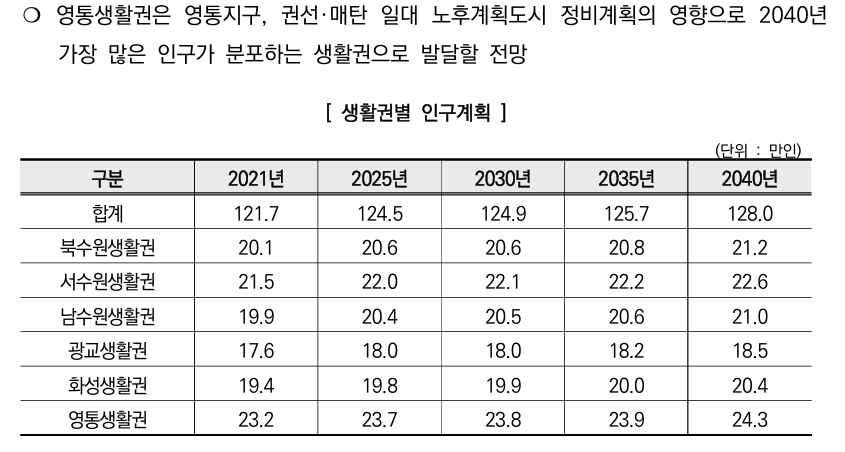

01 Population Baseline
영통생활권은 현재 22.4만 명, 2040 공식계획은 24.3만 명이다. 차이 1.9만 명이 계획 검토의 기준선이다.
현재 주민등록 인구
22.4만 명
2026-03-31, 주민등록인구(상주) 8개 행정동 합계
2040 공식 계획인구
24.3만 명
2040 수원도시기본계획
공식계획 유지값
1.9만 명
공식계획 유지선과 현재 몫 환산값이 만나는 값
GIS Population Board
22.4만 → 24.3만
1.9만현상유지값
8개 동행정동
3권역망포·영통·매탄
11.12㎢행정구역면적
Yeongtong Living Area
8개 행정동 · 22.4만 명
5-10 Year Trend
자연증가가 아니라 공식계획 유지선이 핵심

공식계획 2040영통생활권 24.3만 명, 수원 전체 19.0%.
02 Population Profile
단순 배후주거지가 아니라, 복합 수요가 이미 존재한다.
03 Capacity Logic
추가 인구는 조건부 수용 가능성과 기반시설 보완 필요성을 함께 검토해야 한다.
검토 방향
망포·영통·청명 축은 역세권 접근성, 매탄·영통권은 정비 조건, 산업-주거 접점은 직주근접 조건을 확인하는 후보권역이다.
역세권
정비
산업접점
생활SOC
조건부 검토 레이어
망포·영통·청명·매탄권선 역세권, 매탄·영통권 정비 필요지, 산업-주거 접점, 생활SOC 보완축을 겹쳐 어느 권역에서 조건 검토가 필요한지 설명한다.
Specific Capacity Sites
개발·정비·고밀화는 후보권역별 조건 검토로만 제시한다
03B 3D Strategy Map
추가 1.9만 명은 특정 필지 배치가 아니라, 역세권·정비·접점·SOC 조건을 함께 보는 공식계획 유지 기준값이다.
Conceptual 3D Planning Prototype
영통생활권 경량 3D 전략지도
8개 행정동과 3대 권역을 한 번에 보는 전략 개념도
개념 시각화 / 실제 높이 아님
본 지도는 영통생활권 전략 검토를 위한 개념도이며, 실제 건물 높이·용적률·사업 경계를 재현한 것이 아닙니다. 역세권 링, 정비권역, SOC 보완축은 정책·계획 검토를 위한 도식 표현입니다.
망포·영통·청명축을 중심으로 접근성 검토 범위를 표시한다.
노후주거와 생활SOC 보완이 함께 필요한 권역을 개념 매스로 표현한다.
삼성전자 중심 첨단산업 배후주거 기능을 공간적으로 설명한다.
추가 인구 수용은 기반시설 보완 조건과 함께 판단해야 한다.
04 Conditions
1.9만 명은 공식계획 유지선, 초과분은 고밀 부담이다.
Condition Logic
1.9만 명은 현재 22.4만 명에서 2040 공식계획 24.3만 명으로 가는 공식계획 유지선이다.
다만 영통생활권은 면적 대비 인구 몫이 크고 시가화율이 높은 고밀 생활권이므로, 1.9만 명을 초과하는 증가는 별도 기반시설 검토와 추가 근거 제시가 필요하다.
Risk to Condition
부담 지표를 바로 보완 조건으로 연결한다
등급 기준: 공식 밀도·공식계획 혼잡 지점은 `부담 심각`, 특정 동의 인구구조·용지 조건은 `부담 보통`, 산업 접점은 관리형 조건으로 표기했다.
진단 요약
고밀 생활권에서는 현 계획 유지값 자체보다 교통·정비·생활SOC 보완과의 연동 여부가 핵심 검토 기준이다.
05 Allocation Evidence
공식계획 유지 기준값
1.9만 명2040 계획인구 24.3만 명을 실행계획 기준으로 반영하기 위한 근거 기반 기준값이다. 단, 역세권·정비축·직주근접 권역 중심의 조건부 검토가 필요하다.
2040 희망 역할 · 중심지+주거형+산업·일자리형 혼합생활권
Why 1.9?
1.9만 명이 나오는 세 가지 확인
계산 기준
비교 가정 총량과 공식계획 생활권 기준을 분리해 보되, 두 접근 모두 만 명 단위에서는 약 1.9만 명으로 수렴한다.
계산 근거 비교 가정값과 공식계획값 분리
영통생활권의 공식계획 유지 기준값은 1.9만 명이다. 이는 현재 22.4만 명에서 2040 공식계획 24.3만 명으로 가는 계획 격차이며, 비교 가정 증가분 9.9만 명 중 현재 생활권 몫 18.9%를 반영한 값과도 거의 일치한다. 다만 영통생활권은 고밀·고시가화 생활권이므로, 1.9만 명은 역세권·정비축·직주근접 권역 중심의 조건부 검토값으로 관리해야 한다.